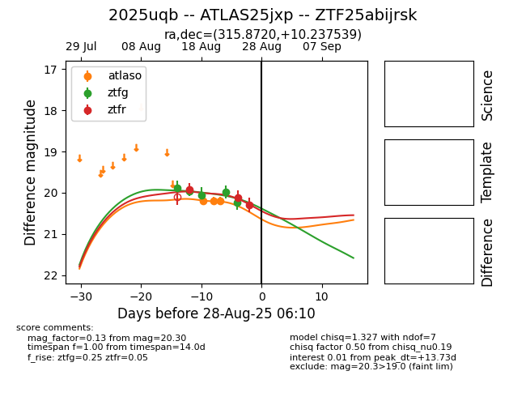

Target 2025uqb at 2025-08-26 11:05, see:
FINK: fink-portal.org/ZTF25abijrsk
Lasair: lasair-ztf.lsst.ac.uk/objects/ZTF25abijrsk
ALeRCE: alerce.online/object/ZTF25abijrsk
TNS: wis-tns.org/object/2025uqb
YSE: ziggy.ucolick.org/yse/transient_detail/2025uqb
alt names
ZTF25abijrsk (ztf,fink)
2025uqb (tns,yse)
ATLAS25jxp (atlas)
coordinates:
equatorial (ra, dec) = (315.8720,+10.23754)
galactic (l, b) = (58.9417,-23.33613)
photometry
last atlaso=20.20, ztfg=20.23, ztfr=20.30
3 atlaso, 5 ztfg, 3 ztfr detections
